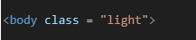

~8 Switching Between Themes~
6/10/2024
Using a Boolean value for the theme mixin
Turn on Watch Sass
Creating this theme will actually be 3 parts
- Creating a Mixin definition called theme
- Creating a .light class to call the mixin farther down in code
- Adding your class to the body tag in the html
Creating a theme @mixin
We are going to be using a @mixin to accomplish this.
Add another @mixin right above your body rule, and below your other @mixin.
Using a Boolean value for the theme mixin
In your main.scss file
Write Boolean @mixin
We will be writing the definition above body rule in main. SCSS file. We are using the official SCSS function of lighten here; but both lighten and darken are provided by SASS. This means that you can say their name (call the mixin functions) and they just work.
This will take a key/value as an argument The property, you want to lighten, and then a percentage of HSL color format. This parameter will range from 0% to 100%. It is working with the third letter in HSL, which represents lightness. The first two letters represent Hue, and Saturation respectfully. But we will not using Hue and Saturation here.
HSL stands for Hue, Saturation and Lightness
@mixin theme($light-theme: true) {
@if $light-theme {
background: lighten($primary-color, 100%);
color: darken($text-color, 100%);
}
}
Watch it, do not get confused here when we are trying to darken our variable of $text-color. We are not trying to reference the font-colors that we have mapped at the top of our SCSS file. Instead, we are referencing the color of our text. If you remember, this is one of the variables that we have stored externally in our _variable partial file.
Writing the light class to go into Boolean
Under your main rule in your SCSS file, write your light class. Look at how we went about writing the call to the light theme, in our .light class under the .main class rule. We used the @include, and then we passed in the variable of light-theme: true. How cool is that?!!
Make sure you still have those 3 curly braces closing out that rule above it, which was a nested rule for
.main.
.light {
@include theme($light-theme: true);
}
Remove - If you still have that rule that we created from an earlier tutorial, you can remove it. It is quite ugly.
Go to your index.html to add the class to the body so we can use it.
<body class="light">

And now, when you run the index. main file, your theme is light with dark text.
Now if you change that Boolean value to be false you will revert back to your dark theme. You make that change in the @include for the .light class
The $light-theme is the argument that was created in the @mixin theme definition, and used in the @if statement inside it to set the rules for manipulating the light and dark colors of the theme.
Go to your main.html to test it
Why does this work?
When we wrote the @mixin, we used a Boolean value of true. So, if we want the theme to be light, and it is true, it will include the light theme style. But if we set it to false when we call it in the .light class, it is not going to add these styles, and will just ignore that we even have them. So, if it is false, we will get our original dark theme. This keeps us from having to write 2 mixins, and we are able to do every thing that we need it to in just one mixin code.
Why are we using 3 steps here, when in our last tutorial, it only required 2 steps? In our last tutorial, our mixin was mimicking a function definition, and its function call. This time, we are still using that @include with the theme(argument), but we have wrapped this code inside of a SCSS class rule. This rule is basically the same as any other rule that we use in CSS, but instead, we are placing SCSS code inside of it, and it will read that SCSS code, and rewrite it to make sense to our CSS file, which the browser understands.
3 Steps
When you use a class in CSS/SCSS, you also will have to attach that class to a tag in the html file, so that it knows where it is to go. This is no different than what we have been doing all along by attaching the class rule to the tag that will listen to it, in the HTML file. Since this is coming with an addition Mixin definition, in addition to the class rule, and attachment to the tag in html file, you now have 3 steps as opposed to the 2-step method, we were able to use in our last tutorial.